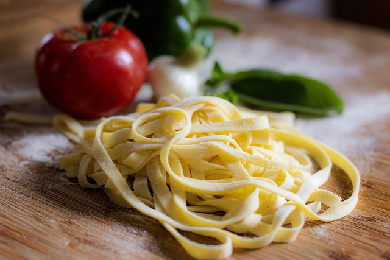

The DishFettuccini Alfredo is a creamy dish that is made by cooking fettuccini noodles and mixing them with a creamy Alfredo sauce. It is typically topped with Parmesan cheese and or chicken, depending on what you are going for. This dish has a score of 6/9, which is about an average score. |
 |
Taste RatingThe taste of Fettuccini Alfredo has a savory but mild flavor, which comes from the parmesan and whipping cream. Adding chicken will give it another source of flavor and substance, which keeps the sauce from being too much. I give Fettuccini Alfredo a 2/3; it's good, but it never really impressed me. |
|
Texture RatingThe texture of Fettuccini Alfredo is creamy and thick, with the noodles and chicken adding a solid bite. The noodles and chicken are soft and tender, which makes it almost a little mushy with all the other ingredients. I am giving the texture a 1/3. I am not a huge fan of mushy. |
|
Presentation RatingThe presentation of Fettuccini Alfredo is always good, it’s served with the chicken on top and the noodles visible under the sauce. The white alfredo sauce covering the noodles has these specs of spices, changing it from looking bland to looking flavorful. I am giving it a 3/3 on presentation. I have never been disappointed. |
|